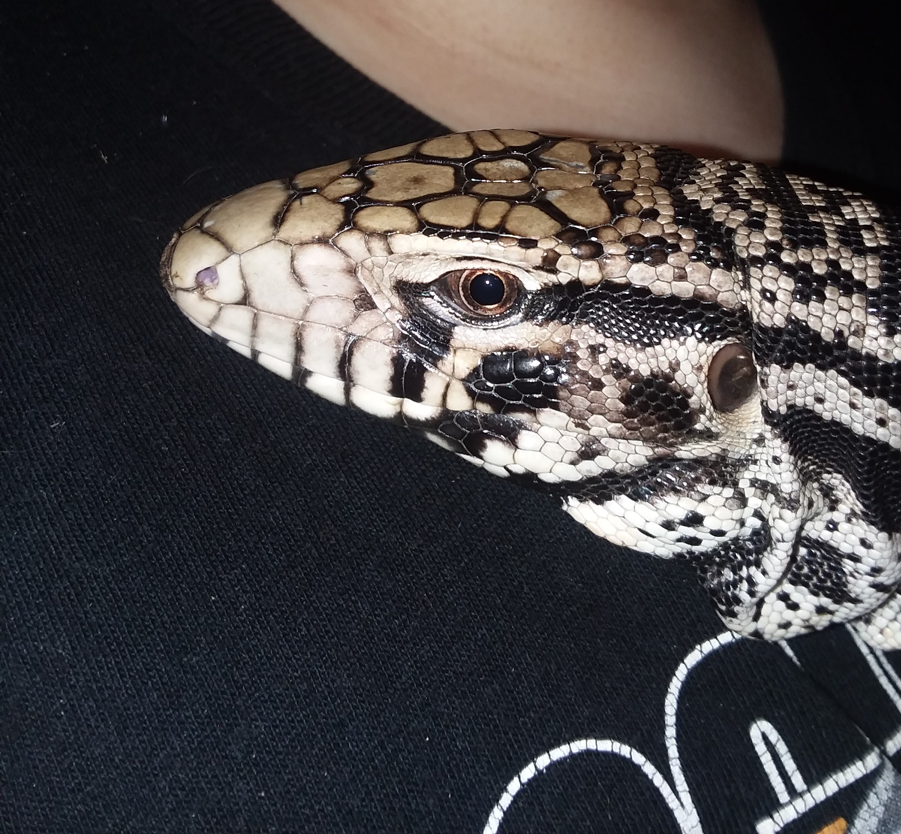

 Tegu Room
home
gender
husbandry
food
husbandry
all ages
thick layer of substrate (cypress mulch, coconut coir, or a sand and soil mix)
though most tegus like to burrow sometimes they just like to flup down in a hide you can use you can use anything from a plastic bin to a hollow log.
large water tub (large enough that they can soak their entire body but not drown)
secured well (tegus are very smart and great escape artists)
Though it is debated I suggest using a UVB light, it helps with absorbing calcium and to synthesize D3
hatchlings
Hatchlings are about 7"-10" long, but grow quickly (about an inch a month sometines more.) if cared for well, so plan for this enclosure not to last long.
basking temp between 115 degrees f and 125 degrees f
40 gollon breeder or a 36"x18"x17" enclosure minimum
substrate 4" deep (cypress mulch, coconut coir, or a sand and soil mix)
adult
Adults can grow anywhere from 4' to 5 1/2' long
because adults get so big their minimum enclosure needs to be 8'x4'x4'
substrate needs to be 12"-24" deep
basking temp between 125 degrees f- 140 degrees f